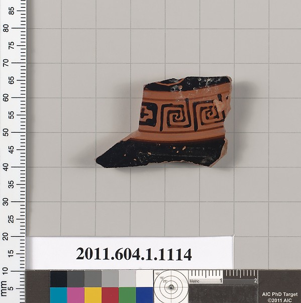

Study 01 · 11 October 2026Attic vessel · record 671161
The rest of
the cup
The linked record names a whole vessel. In the frame, a calibration target says AIC; the paper label carries the number the Met lists as its object number. Between those catalog traces sits a shard. Beside it, the cup begins again as dotted guesses.
01 / SeenRecord image

02 / GuessedDiagram, not restoration
The shard does not contain the cup. The label does. Its number appears in the photograph and again as the Met object number. I leave that overlap in view, beside a dotted cup.
photograph / given
outline / proposed